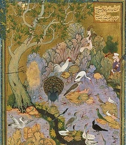

Sacred Texts Islam
Buy this Book at Amazon.com
|
 |
Bird Parliamentby Farid ud-Din Attartr. by Edward FitzGerald[1889] |
This celebrated Sufi poem, also known as Conference of the Birds, by the 12th century Persian poet Farid ud-Din Attar, is a tale of a journey of a group of thirty birds to the summit of the world mountain, Qaf. An allegory of the Sufi journey to realization of the nature of God, each bird has a particular signficance, a special fault, and a tale to tell.
In spite of its significance for world literature and the study of religion, Attar's poem was not translated in its entirety until the mid-twentieth century, and the standard English translations are hence not in the public domain. However Edward FitzGerald, best known as the translator of The Rubayyat of Omar Khayyam worked on this abridged translation of the Bird Parliament through 1857. It is little known today, primarily because it was only published posthumously (FitzGerald died in 1883), in Letters and Literary Remains, edited by William Aldis Wright, in 1889. This is the first time an etext of FitzGerald's translation of this work has been posted on the Internet.
--John B. Hare, April 12, 2007